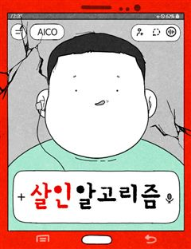
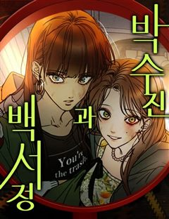

쪽팔려게임 같은 웹툰 추천

쪽팔려게임 · 봉수 / 다이
쪽팔려게임 재밌게 봤다면 이 웹툰들도 좋아할 거예요. 같은 장르이면서 고자극드라마, 시리어스, 우정 같은 요소가 겹치는 작품을, 겹치는 요소가 많은 순서로 20개 골랐어요.
2026-10-04 기준 · 네이버웹툰·카카오웹툰·레진코믹스 · 성인 작품 제외
내 취향으로 직접 골라 추천받기 →-
1
 네이버웹툰
네이버웹툰불완전 자매
언니, 우린 서로가 하나뿐인 ‘자매’잖아. 어릴 적에 많이 아팠지만 지금은 회복하여 평범하게 지내고 있는 고등학생 류소희에게는 아픈 여동생 류아영이 있다. 아영은 언니 소희를 매우 잘 따르지만, 소희는 이런 아영이 부담스러워진다. 어떤 사건을 계기로…
고자극드라마시리어스우정학원물스릴러·공포네이버웹툰에서 보기 → -
2
 네이버웹툰
네이버웹툰미스테리 쇼크
가정폭력을 겪고 있는 진주, 의존적인 성격으로 학교생활도 겉돈다. 그런 진주에게 한시연이란 친구가 생기고 둘은 웹소설을 매개로 엄청 친해진다. 하지만 시간이 갈수록 진주의 의존적인 성격에 힘들어진 시연은 진주에게 상처를 주는 말을 한다. 그리고 진주…
시리어스우정자극적인학원물스릴러·공포네이버웹툰에서 보기 → -
3
 네이버웹툰
네이버웹툰똑 닮은 딸
'우리 엄마가 살인마인 것 같다.' 성적 우수, 품행 단정, 모범적인 자식인 길소명은 엄마가 요구하는 기준에 맞춰 완벽한 딸로 살아왔다. 그러나 남동생이 강물에서 시체로 떠오른 그 날, 소명의 머릿속엔 섬뜩한 의혹이 피어오른다. 자식의 인생에 방해되…
고자극드라마시리어스자극적인스릴러·공포네이버웹툰에서 보기 → · 똑 닮은 딸 같은 웹툰 → -
4

네이버웹툰살인 알고리즘
착하면 호구가 되는 세상, 언제까지 참고 살아야 할까? 남들에게 이용만 당하던 호구 정이영. 그가 평범한 삶을 되찾기 위해 몸부림 친다. 그의 든든한 비서, 챗AI 아이코와 함께.
고자극드라마시리어스자극적인스릴러·공포네이버웹툰에서 보기 → -
5
 네이버웹툰
네이버웹툰기생번식
스릴러 대가 <꼬리잡기> 바쉬 작가 신작. 근원을 알 수 없는 기이한 현상을 겪게 된 세 사람. 덕분에 세 사람은 원하던 모든 것을 얻게 되지만… 처음엔 즐거움만 선사하던 그것이 점점 그들의 일상, 그들의 생사까지 지배하려 한다는 사실을 깨닫는다.…
고자극드라마자극적인스릴러·공포네이버웹툰에서 보기 → -
6
 네이버웹툰
네이버웹툰귀촌리
평범한 시골 마을 '귀촌리'를 찾은 '허무명'. 그는 돌아가신 할머니의 빈 집에 조용히 숨어든다. 그런데 집이 이상하리만큼 깔끔하다. 할머니가 돌아가신 건 3년 전인데? 어쩐지 마을 사람들은 이방인 무명의 방문을 달가워 하는 것 같지 않다. 아니,…
시리어스자극적인스릴러·공포네이버웹툰에서 보기 → · 귀촌리 같은 웹툰 → -
7
 네이버웹툰
네이버웹툰괴이현상 하나
괴이현상 규칙 하나, ?̵̡͖̺̮͚̱͚̿͛̋͌̑͡?̢̨̲̤̞͙̟̌̏́̒̔̎̅͌͠͝?̴̰̭̭͉̬͙̲̄̀̐̿͐͋͛͡͠?̧͖͈̮̞̯̯̟̲̒̏̒͘͘͠을 잊지 마세요. 괴이현상 규칙 둘, 중심부 ?̭̠͙̖̹̪͎͗̒̒̋͒͠?̸̫͈̯͉̝̰͇́̒̀̏́͂͛͟͠을 찾…
시리어스자극적인스릴러·공포네이버웹툰에서 보기 → -
8
 네이버웹툰
네이버웹툰연애지옥
화장실에서 밥 먹는 것이 익숙한 아싸의 삶을 살았던 대학생 '서은우' 어느 날 캠퍼스 최고 여신 '이연주'가 플러팅을..? "그래 일단 만나보자 그럼 분명 뭔가 알아낼 수 있을 거야." 속을 알 수 없는 캠퍼스 여신과 아싸의 연애 일대기. 그런데..…
고자극드라마자극적인로맨스스릴러·공포네이버웹툰에서 보기 → -
9
 네이버웹툰
네이버웹툰개는 헤엄치는 꿈을 꾼다
"우리 이복 남매인 거 알아요?" 매미 소리가 기승을 부리던 여름, 여은의 일상이 완벽하게 흔들린다. 빚만 떠넘기던 엄마가 두고 간 7살짜리 동생, 그리고 엄마의 교통사고 소식과 함께 찾아온 의문의 남자, 기승도. 무채색의 차가운 기운을 풍기는 그와…
고자극드라마자극적인로맨스스릴러·공포네이버웹툰에서 보기 → -
10

네이버웹툰박수진과 백서정
어느 날, 제일 친한 친구에게서 자신이 남자친구를 죽였다는 연락이 왔다. 잘생긴 남자만 골라 만나는 백서정과 전직 유도선수 박수진. 살인 사건의 공범이 된 두 사람은 각자의 방식으로 어떻게든 멀쩡하게 살아보려 한다. 그런데 남들처럼 평범하게 사는 건…
우정자극적인스릴러·공포네이버웹툰에서 보기 → -
11
 네이버웹툰
네이버웹툰작성자OO
"내가 쓰지 않았어!" 인기 아이돌 정하진의 학폭 폭로가 터진다. 기억을 훔쳐본 듯 자세한 내용에 세상은 피해자인 민지를 '작성자'로 지목하는데. 내 기억을 훔쳐 가해자의 숨통을 조이는 정체불명의 작성자. 이건 나를 위한 완벽한 복수일까? 아니면 또…
자극적인학원물스릴러·공포네이버웹툰에서 보기 → -
12
 네이버웹툰
네이버웹툰당신의 가격을 알려드립니다
「모든 인간에게 가격이 매겨지는 세상, ‘0원’이 되면... 죽는다!」 전 세계 사람들의 휴대폰에 인간의 가격을 매기는 바이러스 앱이 깔렸다. 평균 100만원대 이상은 달리는 보통의 사람들 사이에서 “2,500원”이란 헐값으로 매겨진 주인공 고고희.…
고자극드라마스릴러·공포네이버웹툰에서 보기 → -
13네이버웹툰
하트는 파랑
호기심이 남다른 고등학생 김민지. 그리고 그런 민지를 미워하는 정체불명의 인물. 두 사람은 서로의 이름도 모르는 채 편지를 주고받기 시작한다. 과연 민지는 계획대로 범인을 찾아 복수에 성공할 수 있을까? 민지의 달콤살벌 좌충우돌 로맨스
우정학원물로맨스스릴러·공포네이버웹툰에서 보기 → -
14
 네이버웹툰
네이버웹툰빚, 나는 연인
오랜 연인과 절친한 친구의 바람. 그들의 배신으로 사랑과 우정을 동시에 잃은 이봄. 전 연인이 빌려 간 5천만 원마저 사라진 순간, 수상한 남자 백도혁이 나타난다. “사람은요, 자기 손에서 놓친 게 더 빛나 보이면 결국 다시 돌아보게 돼요.” 전 연…
고자극드라마자극적인로맨스네이버웹툰에서 보기 → -
15
 네이버웹툰
네이버웹툰고독살인
무시 당하며 살아온 밑바닥 인생의 중년 남성 고영도는 술에 취해 사적인 장면이 담긴 영상을 남긴다. 그날의 영상이 실수로 생중계 되자, 외면 받던 그의 비참한 일상은 뜻밖의 관심을 받는다. 위로처럼 보였던 관심은 곧 고영도의 삶을 예상치 못한 방향으…
고자극드라마자극적인스릴러·공포네이버웹툰에서 보기 → -
16
 네이버웹툰
네이버웹툰미래의 골동품 가게
남해의 먼 섬에 살고 있는 소녀, '미래'. 미래의 부모님이 바다에서 돌아오지 못한 그날부터, 모든 것들이 변하기 시작했다. 저주를 풀기 위한 단 한 가지의 방법. 소중한 것들을 지키기 위한 기묘한 소녀의 퇴마가 시작된다.
시리어스스릴러·공포네이버웹툰에서 보기 → · 미래의 골동품 가게 같은 웹툰 → -
17
 네이버웹툰
네이버웹툰데빌 캐피탈
가난한 대학생 태구는 빚에서 벗어나기 위해 <데빌 캐피탈>에서 감각 일부를 바치고 악마와 계약한다. 태구는 빚을 갚고 평범한 삶으로 돌아가려 하지만 악마는 모든 걸 가져가기 위해서 태구 주변을 압박한다. 그 과정에서 옆방에 살던 자린과 살인 사건에…
고자극드라마스릴러·공포네이버웹툰에서 보기 → -
18
 네이버웹툰
네이버웹툰물고 뜯고 속이고
시각장애인 자선 행사장, 그 화려한 파티의 중심. 그 누구보다 아름답게 빛나는 유명 국회의원의 양딸 윤서하. 하지만 시력을 잃은 그녀에게 이 화려함은 울타리가 아닌 족쇄일 뿐이다. 이 지옥같은 족쇄에서 벗어나기 위해, 서하는 자신의 모든 것을 건 거…
고자극드라마자극적인로맨스네이버웹툰에서 보기 → -
19
 네이버웹툰
네이버웹툰유령의 노래
어렸을 때부터 환청을 듣는 병을 앓아왔던 노아. 어느 날 의문의 살인사건이 일어나고, 환청은 범인을 알고 있다며 노아에게 속삭인다. 진실을 알 수 없어 혼란스러워하는 그녀의 주변에 이상한 일이 일어나기 시작한다.
시리어스스릴러·공포네이버웹툰에서 보기 → -
20
 네이버웹툰
네이버웹툰좀비묵시록 82-08
탕-! 의문의 선박 속 '그것'으로부터 시작된 괴이한 전염병은 서울을 죽음의 도시로 만들어버린다. 예고 없이 닥쳐온 심판의 그날부터 세상의 모든 질서는 완전히 리셋되었다. 처절한 생존 경쟁 속에서 프로젝트명 [좀비묵시록 82-08]이 시작된다.
시리어스자극적인스릴러·공포네이버웹툰에서 보기 →